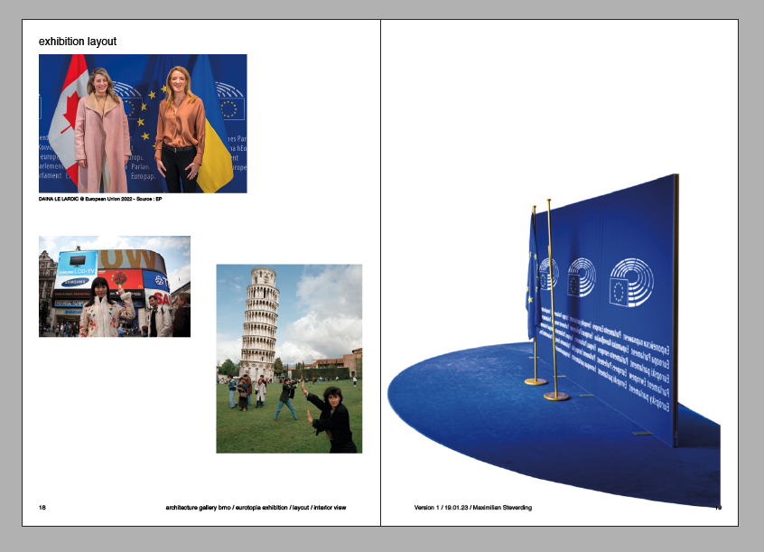

V současnosti procházíme obdobím mnoha krizí v Evropě i ve světě. Prosazování politických reforem je právě nyní nebývale aktuální, nicméně hlasy jednotlivců stále postrádají náležité zastoupení na evropské úrovni.
Pro výstavu v brněnské Galerii Architektury hledáme naléhavá politická témata u neziskových organizací, umělců i jednotlivých občanů. Sdílejte s námi svůj příběh doplněný krátkým textem a obrázkem, který bude sloužit jako umělecké ztvárnění projektu v rámci výstavy o politické sebeprezentaci.
Výstava se zabývá reprezentační architekturou Evropské unie a její omezenou možností poskytnout prostor pro individuální reprezentaci občanských hlasů. Vzniká tak konfliktní situace odtržená od společenské poptávky, jež si přitom žádá zvýšenou individuální reprezentaci politických názorů.
Instalace si pohrává s oblíbeným tématem pozadí tiskové konference (320/220 cm). Toto pozadí je obsaženo v různých formách politické komunikace směrem k veřejnosti a je všudypřítomným prvkem reprezentace politických aktérů v kontextu určité politické instituce.
V rámci instalace vytvoříme tiskovou stěnu pro spekulativní Evropské občanské shromáždění. Zatímco symboly evropské vlajky zůstanou přítomny, modrá barva bude použita jako klíčovací pozadí, které rozšíří fyzickou tiskovou stěnu o vámi předložené snímky. Návštěvníci si budou moci vybrat konkrétní téma, které chtějí v rámci shromáždění prezentovat, a vyfotografují se před tiskovou stěnou s nimi vybraným pozadím. Poté bude možné snímky šířit v digitálním prostoru sociálních sítí. Kromě toho bude sbírka fotografií prezentována na webových stránkách výstavy.
Věříme, že se nám podaří shromáždit množství politických požadavků z celého světa, jež se budou týkat aktuálních evropských témat, které budou v rámci výstavy vystaveny. Výstava zprostředkuje návštěvníkům potřebné informace a poučí je prostřednictvím doprovodného textu a odkazy, které bude možné zaslat spolu s obrázkem. Navíc se díky lidem , kteří pozadí zveřejní, vytvoří expozice určitého tématu na sociálních sítích.
Na e-mail info@galeriearchitektury.cz pošlete následující materiály pomocí cloudového uložiště (např. úchovna/wetransfer)